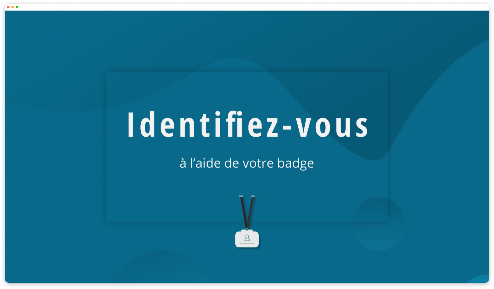
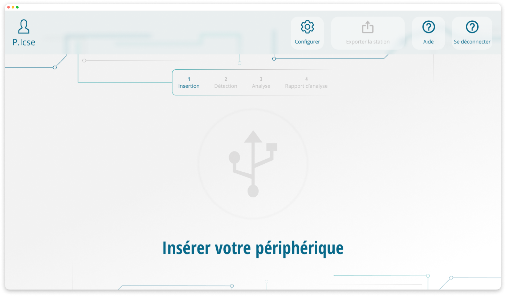
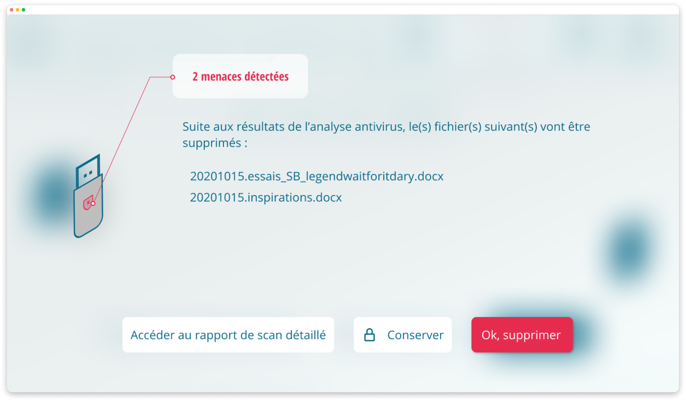
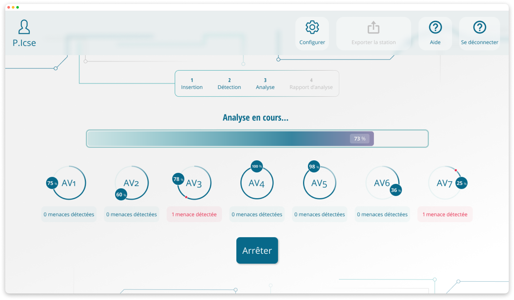

Logiciel station blanche
Contexte
Dans un contexte sensible, un projet portait sur la conception d’interfaces pour un système de contrôle visant à sécuriser des environnements informatiques. L’enjeu était de proposer une expérience fiable, guidée et adaptée à des procédures strictes.
Objectifs
Les procédures de station blanche sont à la fois coûteuses et chronophages pour les utilisateurs. L’enjeu principal était donc de proposer une interface simple, claire et rassurante, permettant de réduire la charge cognitive, de limiter les erreurs et de fluidifier les parcours dans un contexte de sécurité élevé.
Rôle & démarche
- Réalisation d’un benchmark des solutions existantes et des bonnes pratiques en matière d’interfaces de sécurité ;
- Analyse fonctionnelle des besoins utilisateurs et des contraintes liées aux procédures de sûreté ;
- Organisation et réalisation de tests utilisateurs pour valider la compréhension et l’utilisabilité des parcours ;
- Conception de maquettes basse fidélité (Axure RP) puis haute fidélité (Figma) ;
- Accompagnement des équipes techniques et suivi de la phase de développement pour garantir la conformité aux maquettes.
Impact / Résultats
- Livraison de maquettes exploitables comme références IHM pour le développement ;
- Développement de la solution.



